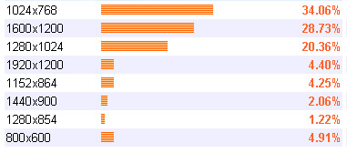

|
Converting to JPEG for Web DisplayVersion 1.2, ©2003, 2007 by Dale Cotton, all rights reserved Fig 1. A problematic high-detail image, sharpened: USM 200/0.3/4 The following is my current Photoshop procedure for making JPEGs. Improvements and corrections very much solicited:
 Fig 2. Screen resolution stats for visitors to this site, June 2007. Most people use 1024x768 screen res or larger with maybe 5% using 800x600. I normally size landscape orientation pictures for gallery/album display to 800 pixels width – this fills most of a 1024x768 display and all of a 800x600 display. Images meant for illustrations should usually be smaller – perhaps 400 or 500 pixels width. Portrait orientation images would need to be 700 pixels or shorter in height to accomodate 1024x768 screens.
That's assuming your image is in AdobeRGB or larger colour space. sRGB is similar to the gamut of monitors. Most people use Windows, which doesn't support profiles in browsers, so the profile gets stripped away. AdobeRGB gamut can be severely clipped if stripped away, but sRGB gamut isn't. Down-sampling larger images to the smaller size needed for the web leaves them soft:
Although it's a nuisance I perform these adjustments with my monitor set to 1024x768 res, so I'm seeing what the typical user sees.
My file-size targets are 150 KB for 800x600 album/gallery pix, and roughly 75 KB for illustrations. The more compression you apply the more your carefully achieved sharpening will be ravaged, so trade-offs always involve some angst. If you want to add a simple border:
|